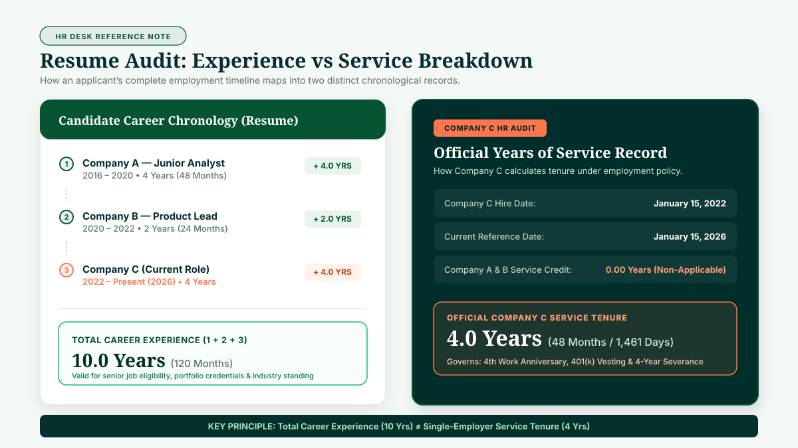
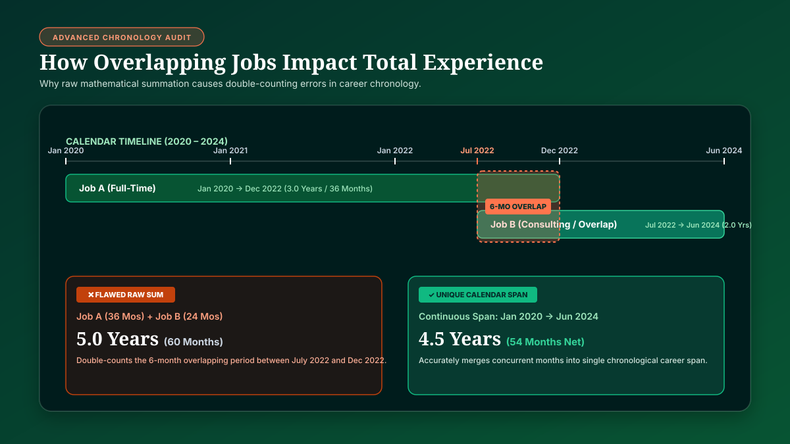

Years of Service vs Years of Experience at a Glance
In professional life, human resources administration, and resume writing, the terms years of service and years of experience are frequently spoken in the same breath. However, conflating them leads to significant confusion on job applications, erroneous pension estimates, and flawed tenure tracking.
The fundamental rule to remember is straightforward: one employer does not equal your entire career. The following comparison highlights how each metric operates:
| Comparison Factor | Years of Service | Years of Experience |
|---|---|---|
| Basic Definition | Time associated with a specific employment or organizational service relationship. | Cumulative professional work experience accumulated across relevant industry roles. |
| Starting Anchor | Official hire / start date with the current or designated employer. | Beginning of qualifying professional or domain-specific practice. |
| Includes Multiple Employers? | Generally No (unless under reciprocal transfer or merger rules). | Yes (aggregates across past and present employers). |
| Primary Focus | Organizational tenure, retention milestones, and internal loyalty. | Career mastery, domain competency, and cumulative industry skill. |
| Common Applications | Work anniversaries, PTO accrual tiers, 401(k) vesting, severance, and internal pensions. | Resumes, job qualification screening, professional licensing, and portfolio bios. |
| Measurement Standard | Strict calendar duration (Y; M; D) or formal qualifying service-credit hours. | Total elapsed duration across qualifying relevant employment periods. |
| Representative Example | 6 years of continuous service with Company B. | 10 years of total software engineering practice across 3 companies. |
These terms may carry specific statutory definitions within particular organizations, civil service commissions, collective bargaining agreements, or pension trusts. For formal legal, pension, licensing, or statutory severance calculations, always apply the exact service-credit definitions and dates stipulated by your governing plan document.
What Are Years of Service?
Years of service represents the exact elapsed duration of an employee’s active working relationship with a single employing entity or corporate parent. It is anchored directly to an official start date (the hire date) and measured forward to either the present day (for active staff) or a termination/separation date (for former employees).
For instance, if an individual begins employment on January 10, 2020, and evaluates their tenure on January 10, 2026, they have completed exactly 6 years of service with that organization.
Depending on the administrative purpose, an employee’s years of service can be represented through multiple mathematical formats:
- Completed Calendar Units: Exactly
6 years, 0 months, 0 days. - Cumulative Months:
72 total completed monthsof continuous employment. - Total Elapsed Calendar Days:
2,192 elapsed days(accounting for the 2020 and 2024 leap years). - Decimal Representation:
6.00 decimal yearsfor executive analytics and actuarial reporting.
For a comprehensive step-by-step breakdown of how calendar increments and leap days are evaluated, explore our complete editorial guide: How to Calculate Years of Service: Years, Months & Days.
What Are Years of Experience?
Years of experience takes a macro, career-wide perspective. It measures the aggregate time an individual has spent practicing a craft, managing projects, or working within a specific professional domain, regardless of how many different companies, clients, or organizations they served along the way.
Consider a senior marketing strategist who has advanced through three distinct employment chapters:
- Employer A (Digital Agency): 2016 to 2019 →
3 years - Employer B (E-commerce Retailer): 2019 to 2022 →
3 years - Employer C (Enterprise SaaS Brand): 2022 to 2026 →
4 years
When this professional applies for an executive director role, they legitimately present 10 years of professional marketing experience. However, their official years of service with Employer C remains exactly 4 years.
Crucial Qualitative Distinction: Having "years of experience" does not mean simply summing every date that appears on your life timeline. In hiring and licensing contexts, experience must be qualifying and relevant. If an individual worked for two years in hospitality before transitioning to mechanical engineering, those two years count toward general employment history, but do not count toward years of engineering experience.
What Is the Difference Between Years of Service and Years of Experience?
The distinction between these two metrics comes down to the core operational question each one answers:
- Years of Service asks: "How long have you continuously served within this specific employer-employee relationship?"
- Years of Experience asks: "How much cumulative professional mastery and domain knowledge have you accumulated across your career?"
Career Experience vs. Single-Employer Service
Notice how individual service blocks unite to form total career experience, while service tenure remains locked to the active employer.
Aggregates all relevant professional chapters:
Governed exclusively by Company C start date:
Interactive Tool: Service vs. Experience Calculator
Use this interactive modeler to map your employment history and compare your current employer service tenure against your aggregate career experience:
Service vs. Experience Chronology Calculator
Enter your current employment start date and add previous relevant employment periods to see both metrics side-by-side.
Detailed Example: 10 Years of Experience but 4 Years of Service
Let’s examine a real-world career scenario to see how this distinction translates into official documentation:
Elena began her career in software engineering on January 15, 2016. Over the next decade, she worked with three different technology firms:
- Alpha Technologies (2016–2020): 4 full years of software development.
- Beta Systems (2020–2022): 2 full years as a systems architect.
- Gamma Cloud (2022–Present): 4 full years as a principal engineering lead.

Key Takeaway: Elena can legitimately state on her resume, LinkedIn profile, and client proposals that she possesses 10 years of professional software architecture experience. However, for internal Gamma Cloud matters—such as her upcoming 4th work anniversary, 401(k) vesting percentages, and company severance tiers—her official years of service is precisely 4 years.
Can Years of Service Be Greater Than Years of Experience?
While experience is usually equal to or greater than service tenure, there are distinct scenarios where an employee's official years of service exceeds their relevant professional experience:
- Internal Career Transitions: Suppose David joined a manufacturing corporation as an assembly line associate in 2014. In 2022, after completing a night degree, he transferred internally to the corporate accounting department. By 2026, David has 12 years of service with the company, but only 4 years of accounting experience.
- Formal Service Credit Adjustments: Certain public sector agencies, military retirement systems, and union plans grant statutory service multipliers (e.g., hazardous duty service credits or prior municipal service buybacks). In these plans, an employee’s credited years of service for pension formulas can exceed their actual elapsed career years.
- Apprenticeships and Non-Professional Tenures: Time spent in pre-professional training, student internships, or administrative support roles may count toward an organization's internal employment tenure without qualifying as post-credential professional experience.
Rule of Thumb: Never assume that service and experience are interchangeable simply because both values are expressed in years.
Can Years of Experience Include Multiple Employers?
Yes. In virtually every professional discipline, years of experience is explicitly designed to cross organizational boundaries. Industry standards evaluate your cumulative exposure to tools, methodologies, leadership challenges, and technical problems across multiple environments.
When recruiters, hiring managers, and licensing bodies post requirements stating "Minimum 7+ years of experience required," they expect candidates to combine their qualifying tenure across multiple past employers:
Employer 1 (2 Years) + Employer 2 (5 Years) + Employer 3 (3 Years) = 10 Years of Relevant Industry Experience
However, combining multiple employers introduces a critical mathematical hazard: overlapping employment periods.
What If Employment Periods Overlap?
In modern careers, professionals frequently hold overlapping positions—such as working full-time at Company A while consulting part-time for Company B, or transitioning gradually between two concurrent contracts.
A common mistake is simply adding the raw duration of each job together, which results in chronological double-counting:

To maintain strict accuracy on resumes and background checks, differentiate between two concepts:
- Raw Employment Duration: The arithmetic sum of every separate contract (e.g., 36 months + 24 months = 60 months / 5.0 years). This measures total workload volume, not chronological time.
- Unique Calendar Experience: The net elapsed duration from the earliest start date to the latest end date, minus any unworked gaps (e.g., January 2020 through June 2024 = 54 months / 4.5 years).
Years of Service vs. Employee Tenure
While years of experience looks outward across your entire career, years of service and employee tenure look inward at your specific relationship with an employer. Although often treated as synonyms, subtle nuances exist in corporate and academic usage:
| Term | Core Analytical Focus | Standard Measurement Context |
|---|---|---|
| Years of Service | Quantitative duration of active work or credited service points. | PTO accrual, vesting schedules, retirement calculations, and service awards. |
| Employee Tenure | Organizational retention, stability, and length of employment status. | Workplace culture studies, HR retention metrics, and career longevity. |
| Years of Experience | Cumulative professional practice and domain competency. | Job eligibility, talent acquisition, and professional credentialing. |
For an in-depth breakdown of how HR systems track and measure organizational longevity, see our guide on how to calculate employee tenure from a start date.
Years of Service vs Years of Experience on a Resume
Navigating these metrics accurately on a resume or curriculum vitae (CV) is critical for passing Applicant Tracking Systems (ATS) and professional background checks:
- In the Executive Summary / Headline: Use Years of Experience. For example: "Senior Financial Analyst with 8+ years of corporate treasury experience." This reflects your total professional depth across all past and current employers.
- In the Work History Section: Present Years of Service / Job Tenure per employer. For example: "Treasury Analyst • Global Capital Partners • March 2022 – Present (4 Years)."
Never artificially inflate your experience by adding overlapping part-time roles together to exceed the actual calendar years you have lived and worked. Third-party background screening firms verify exact start and end dates directly with payroll databases.
Years of Experience vs. Years of Employment
Another subtle distinction occurs between general years of employment and specialized years of professional experience:
Years of employment measures the total time you have been in the workforce earning a living, regardless of the industry or job function. In contrast, years of experience is almost always scoped to a specific field, tool, or skill set.
Example: An individual who worked 3 years in retail sales, 2 years in customer support, and 5 years as a cybersecurity engineer has 10 years of employment history, but precisely 5 years of cybersecurity experience.
Which Measurement Applies to Your Situation?
To determine which metric you should calculate, identify your primary objective in the decision matrix below:
| If Your Goal Is To Determine... | Applicable Metric | Primary Source of Truth |
|---|---|---|
| Your next paid time off (PTO) accrual increase | Years of Service | Current employer hire date & HR handbook |
| When you celebrate your next milestone at work | Work Anniversary | Annual start date recurrence |
| Whether you qualify for a senior job posting | Years of Experience | Cumulative relevant career timeline |
| Your vesting percentage in a 401(k) / pension plan | Credited Service | Plan summary document & qualifying hours |
| Severance pay eligibility upon organizational layoff | Years of Service | Continuous tenure with exiting employer |
| Professional engineering or medical board licensing | Qualifying Experience | Post-graduate verified practice records |
How to Calculate Years of Service
To calculate your exact years of service with your current organization, follow these four foundational steps:
- Identify Your Official Start Date: Use your official hire or onboarding date as recorded on your initial employment contract.
- Establish the Reference Date: For active employees, use today's date; for former employees, use the final separation date.
- Calculate Calendar Increments: Count completed whole calendar years first, then completed whole months, and finally the remaining elapsed days.
- Account for Organizational Rules: Check whether unpaid leaves of absence, furloughs, or probationary periods pause service accumulation under company policy.
For automated calculation across all date formats, use our dedicated Years of Service Calculator.
How to Calculate Total Work Experience
Calculating cumulative career experience requires an aggregated multi-step workflow:
- Compile Full Work History: List every employer, job title, and exact start/end dates (Month/Year).
- Filter for Relevance: Remove employment periods that fall outside the targeted professional domain or job description.
- De-duplicate Overlapping Dates: Consolidate any concurrent roles into unique calendar intervals so no month is counted twice.
- Deduct Significant Career Gaps: Subtract any sabbaticals, parental leaves, or extended periods between jobs.
- Sum the Remaining Months: Convert the net total into completed years and months (e.g., 94 months = 7 years, 10 months).
How Career Breaks Impact Years of Experience
A common point of confusion is equating calendar time since graduation with years of experience.
If an architect graduated and took their first job in 2016, but took a 2-year career break between 2020 and 2022 to travel or care for family, exactly 10 calendar years have elapsed between 2016 and 2026. However, their actual professional experience is:
10 Elapsed Calendar Years − 2 Years Career Break = 8 Years of Professional Experience
Always base your experience claims on active, qualifying working duration rather than raw elapsed calendar years.
Do Employment Breaks Reset Years of Service?
While career breaks simply pause your total experience accumulation, an employment break with a single company can have profound effects on your years of service:
- Formal Resignation and Rehire: If you resign from Company A, work elsewhere for two years, and are later rehired by Company A, many corporate policies treat you as a new hire, resetting your service clock to Day 0.
- Bridge of Service Policies: Some progressive organizations offer "service bridging" provisions: if an employee returns within a specified window (e.g., 12 months), their previous tenure is restored and credited toward overall service milestones.
- Approved Leaves of Absence: Statutory family medical leaves (such as FMLA in the United States) typically preserve your continuous employment status, though some benefits may pause active service-credit accrual during unpaid portions.
6 Common Mistakes When Measuring Service vs. Experience
Avoid these six frequent pitfalls when calculating and reporting employment chronology:
- Treating Service and Experience as Identical: Assuming that your tenure with your current employer represents your total career depth, or vice versa.
- Adding Overlapping Roles Twice: Summing the durations of concurrent part-time or consulting jobs, which artificially inflates calendar experience.
- Counting Irrelevant Work as Domain Experience: Including unrelated student jobs or early hospitality roles when applying for specialized technical positions.
- Ignoring Sabbaticals and Career Gaps: Counting elapsed calendar years since college graduation instead of actual active working months.
- Assuming Past Service Automatically Transfers: Expecting a new employer to honor your 8 years of service from your former company for PTO or vesting calculations.
- Confusing Calendar Time with Formal Benefit Credits: Assuming that working part-time for 5 calendar years grants 5 full years of pension service credit without verifying minimum plan hours.
Frequently Asked Questions
What is the difference between years of service and years of experience?
Are years of service and years of experience the same thing?
Does years of experience include multiple employers?
Can I have 10 years of experience but only 4 years of service?
Does a career break affect years of experience?
Does changing jobs reset years of service?
Is employee tenure the same as years of service?
Can overlapping jobs be counted as separate experience?
How do I calculate total work experience?
How do I calculate years of service with my current employer?
Should years of experience include unrelated jobs?
How are years of service calculated for formal pensions?
Explore the Employment Chronology Knowledge Base
Deepen your understanding of organizational tenure, service milestones, and career chronology with our dedicated guides: